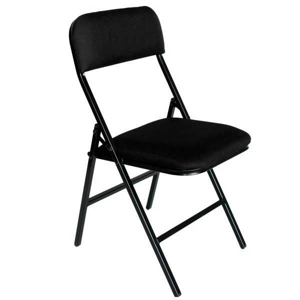

Sillas plegables de plástico

Sillas plegables de plástico:
Las sillas plegables de plástico son una opción práctica y versátil para eventos tanto en interiores como en exteriores. Ofrecen comodidad y facilidad de transporte, lo que las convierte en una elección popular para una variedad de ocasiones, como fiestas, eventos deportivos, picnics y reuniones familiares.
Capacidad para:
Este conjunto de sillas plegables de plástico incluye un total de 50 unidades. Con esta cantidad, puedes proporcionar asientos cómodos para hasta 50 personas durante tu evento.
Costo:
El costo de este conjunto de sillas plegables de plástico se encuentra en la escala de $1500. Esta opción económica te permite obtener un gran número de sillas a un precio asequible, lo que es ideal para eventos de gran tamaño donde se necesitan múltiples asientos.
Nota:
Las sillas plegables de plástico son ligeras y fáciles de transportar, lo que las hace ideales para uso en exteriores. Asegúrate de verificar las dimensiones y la capacidad de peso de las sillas para garantizar su idoneidad para tus necesidades específicas. Además, considera la posibilidad de disponer de espacio de almacenamiento adecuado cuando las sillas no estén en uso..